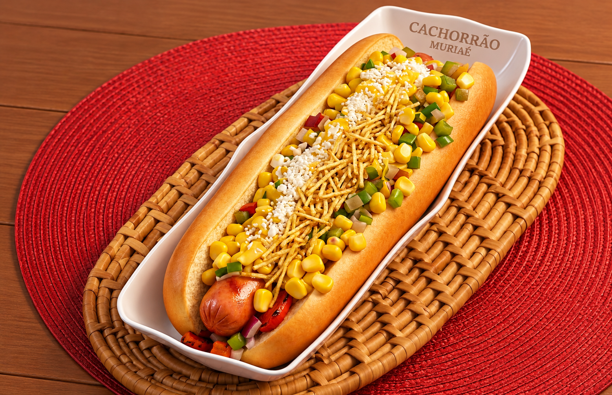

"Um guia de sobrevivência para quem veio de São Paulo e descobriu que pizza de calabresa com queijo é normal e batata palha no cachorro quente, também!"



Por que Muriaé?
Chegou em Muriaé e está perdido? Não entre em pânico!

Este é um guia de sobrevivência bem-humorado criado para ajudar você a entender os costumes locais, as leis da física dos nossos lanches e o porquê de todo mundo aqui saber quem é o seu pai.

Muriaé, ou Meruim-hu na língua puri, é uma cidade mineira da Zona da Mata que conquistou fama não só pelos seus mais de 108 mil habitantes, mas também pela capacidade quase sobrenatural de receber bem quem chega.

Localizada a cerca de 370 km de Belo Horizonte, em um território de aproximadamente 840 km², a cidade mistura desenvolvimento, tradição e aquele jeitinho acolhedor que faz qualquer visitante se sentir em casa.
O verdadeiro luxo mineiro é ser recebido com um sorriso no rosto e um convite para repetir mais um pão de queijo.

E, claro, não dá para falar de Muriaé sem mencionar o pão de queijo: por aqui, ele não é apenas um alimento, é praticamente uma instituição servida quentinha com um cafezinho passado na hora. Entre um dedo de prosa, boa hospitalidade e paisagens encantadoras, Muriaé prova isso todos os dias.